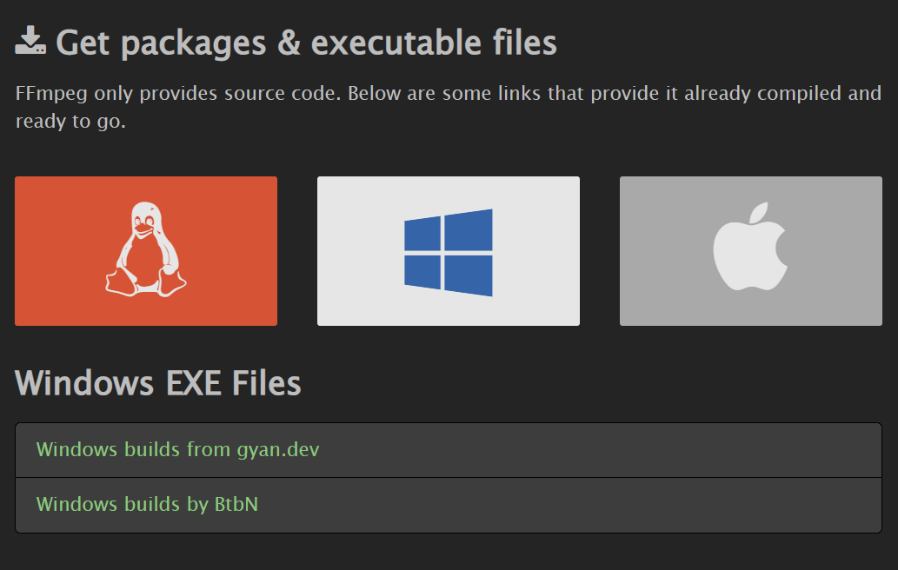
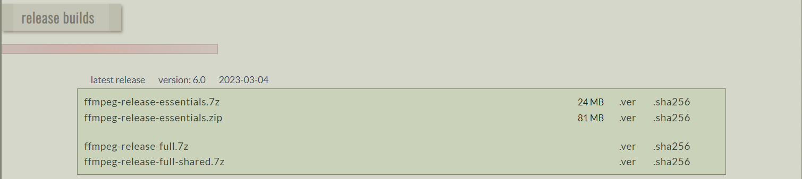
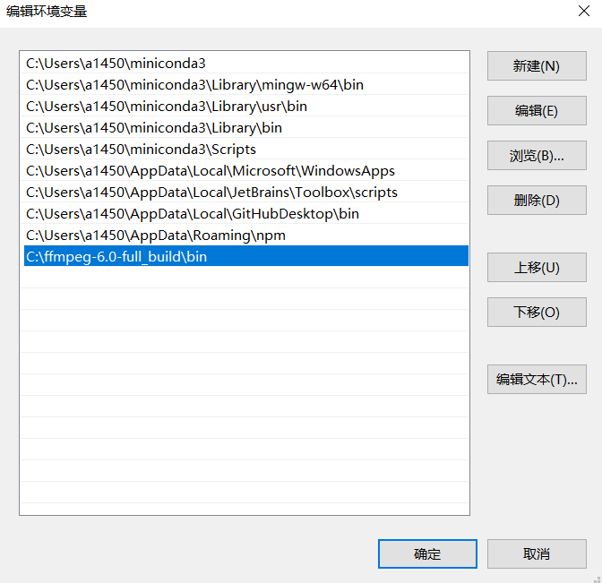

使用 GPU 加速 FFmpeg 转码的简单示例
FFmpeg转码 GPU加速 简单示例
常见的h264, hevc(h265)格式视频为例
¶Nvidia GPU加速转码
通过 h264_cuvid、 hevc_cuvid和 h264_nvenc、 hevc_nvenc参数来加速h264和hevc解码和编码。
一、不指定原视频解码加速方式
-c:v hevc_nvenc加速hevc格式编码
ffmpeg -i input.mp4 -c:v hevc_nvenc -b:v 1024k output_265_gpu.mp4二、指定原视频解码加速方式
h264编码格式转hevc编码格式示例
-c:v h264_cuvid指定加速h264格式视频解码，-c:v hevc_nvenc加速hevc格式编码
ffmpeg -c:v h264_cuvid -i input.mp4 -c:v hevc_nvenc -b:v 1024k output_265_gpu.mp4hevc编码格式转h264编码格式示例
-c:v hevc_cuvid指定加速hevc格式视频解码，-c:v h264_nvenc加速h264格式编码
ffmpeg -c:v hevc_cuvid -i input.mp4 -c:v h264_nvenc -b:v 2048k output_264_gpu.mp4¶Intel GPU加速转码
通过 h264_qsv、 hevc_qsv来加速h264和hevc解码和编码。
不同于Nvidia GPU加速参数，Intel GPU加速解码与编码参数一样。
替换上述Nvidia GPU参数即可实现Intel GPU加速转码。
下载 FFmpeg
https://ffmpeg.org/download.html#build-windows

有两种编译好的版本，个人喜欢下载 gyan.dev 编译的版本。

essentials build 中包含的库
avisynth+ libaom libass libfreetype libfribidi libgme libgsm libmp3lame libopencore-amrnb libopencore-amrwb libopenmpt libopus librubberband libspeex libsrt libssh libtheora libvidstab libvmaf libvo-amrwbenc libvorbis libvpx libwebp libx264 libx265 libxvid libzimg libzmq mediafoundation sdl2full build 中另外包含的库
chromaprint frei0r ladspa libaribb24 libaribcaption libbluray libbs2b libcaca libcdio libcodec2 libdav1d libdavs2 libflite libilbc libjxl liblensfun libmodplug libmysofa libplacebo librav1e librist libshaderc libshine libsnappy libsoxr libsvtav1 libtwolame libuavs3d libxavs2 libzvbi opencl vulkan都包含的硬件加速库
amf cuda cuvid d3d11va dxva2 libvpl nvdec nvenc下载好将 bin 目录添加至环境变量即可使用
